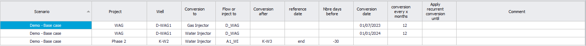
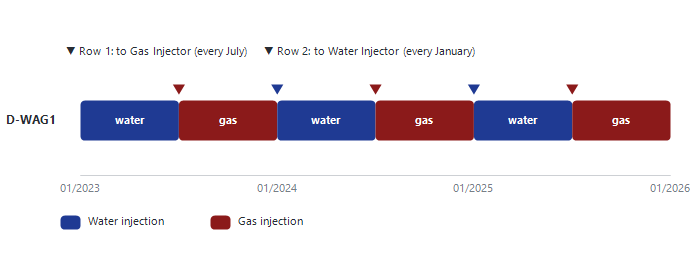

|
Well conversion
1. Overview — changing a well's type during the forecast
The type a well has in the Asset Model is its type at the start of the forecast (see Add wells to Asset Model). A conversion changes that type at a given date, for example an oil producer converted to a water injector, or an injector that alternates water and gas (WAG). The conversion date can be:
•a hard date ("Conversion date"), optionally repeated every few months;
•linked to an opportunity of the sequence of events ("Conversion after"), so it moves when the sequence changes — fast what-if scenarios without editing dates.
2. Enter a conversion
1.Select the scenario, then click "New profiles and Conversions" on the main ribbon.
2.Choose "Conversions" in the list at the top of the window.
3.Click "Add" on the ribbon and fill in the new row (table below).
4.Click "Save". Rows with no well are dropped.
|
Column
|
Meaning
|
|
Project
|
The project of the conversion. If the project is excluded from the forecast in the settings, the conversion is ignored.
|
|
Well
|
The well to convert, picked from the wells of the Asset Model.
|
|
Conversion to
|
The new type: Oil Producer, Gas Producer, Water Injector or Gas Injector.
|
|
Production to or injection from
|
Always fill it in. After the conversion, the node the well produces into (producer) or receives its injection fluid from (injector).
|
|
Conversion after
|
Event-based date: the opportunity the conversion is linked to.
|
|
Reference date
|
"start" or "end" of that opportunity. Required when "Conversion after" is filled: Precept will not save without it.
|
|
Number of days before
|
Optional offset. Positive = that many days before the reference date; negative = after (-30 = 30 days after).
|
|
Conversion date
|
Hard date of the conversion (instead of "Conversion after").
|
|
conversion every x months
|
Optional, hard dates only. Repeats the same conversion every x months after the "Conversion date".
|
|
Apply recurrent conversion until
|
Optional end of the repetition. Blank = until the end of the forecast.
|
|
CAPEX, OPEX, OPEX unit, Group cost to Node, Comment, Linked to Opportunity
|
Optional costs and comment; the opportunity the row was created from, if any.
|
Use either "Conversion after" (with "Reference date" and "Number of days before") or "Conversion date". The cells that do not apply are greyed out. A recurring conversion needs a hard "Conversion date": the recurrence columns are greyed out for an event-based conversion.

The Conversions table: a WAG well with two recurring hard-date conversions (D-WAG1), and an event-based conversion (K-W2).
3. Potential after the conversion
A converted well needs a potential for its new type. In Decline Curves, each conversion adds a profile to define, named after the well and the new type: "<well> (conversion to OP)", "(conversion to GP)", "(conversion to WI)" or "(conversion to GI)". A conversion back to the well's original type uses the well's own profile. These profiles also appear in the Transient table (see Transient).
4. Example — conversion of an oil producer to a water injector
In the table above, well K-W2 is converted to a water injector 30 days after the end of opportunity K-W3: "Conversion after" = K-W3, "Reference date" = end, "Number of days before" = -30 (note the minus sign). If K-W3 moves in the sequence of events, the conversion moves with it.
5. Modelling a WAG well
A WAG (water-alternating-gas) well switches between water and gas injection on a schedule. Model it with two recurring conversions:
1.In the Asset Model, give the well the type "WAG" (or "Water Injector"), and set both its water and gas injection sources.
2.Add a first conversion to "Gas Injector" with a "Conversion date" and "conversion every x months".
3.Add a second conversion to "Water Injector", offset by the length of the gas period, with the same "conversion every x months".
In the example, D-WAG1 is converted to a gas injector on 01/07/2023 and every 12 months after that, and back to a water injector on 01/01/2024 and every 12 months after that. It therefore injects gas for 6 months, then water for 6 months, and so on. A different cycle (for example 18 months of water and 6 months of gas) uses the same two rows with other dates and periods.

Figure 1 — Two recurring conversions make a 6-month gas / 6-month water WAG cycle.
For a well of type "WAG", Precept reads the conversions to find out whether the well injects water or gas at the forecast start. If it finds none, it shows "Precept is unable to determine the status of WAG well ...": add the conversion dates. A WAG well has two profiles in Decline Curves, "<well> (WI WAG)" and "<well> (GI WAG)": one for each injection phase.
6. Conversions created from opportunities
An opportunity with "Impact on Forecast" = "Conversion" carries its own conversion rows, which appear here with the opportunity name in "Linked to Opportunity" (see Opportunities).
|